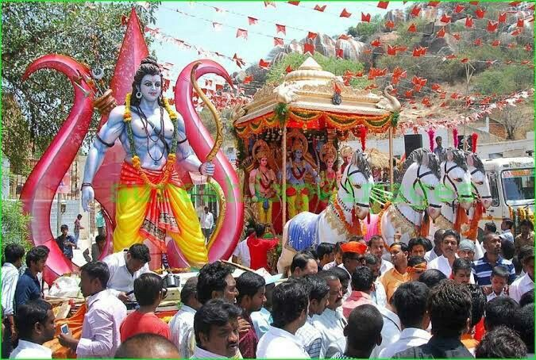
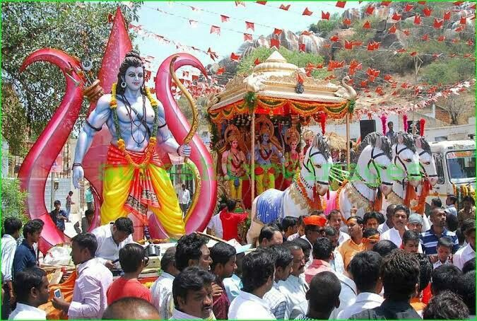

Hindu Festivals
Holi: Celebrated with unmatched enthusiasm, especially in Mathura and Vrindavan, Holi marks the arrival of spring and victory of good over evil. The traditional Lathmar Holi in Barsana and Nandgaon attracts visitors from all over the world for its colorful and playful festivities.
Diwali: Known as the Festival of Lights, Diwali celebrates the return of Lord Rama to Ayodhya. The city of Ayodhya holds spectacular Deepotsav events, lighting up thousands of earthen lamps on the banks of the Sarayu River, setting world records for illumination.
Ram Navami: Celebrated as the birth of Lord Rama, this festival is especially significant in Ayodhya, his legendary birthplace. Temples are decorated, and large processions with tableaux depicting episodes from the Ramayana are organized.
 

Krishna Janmashtami: The birth of Lord Krishna is celebrated with devotion and joy, particularly in Mathura and Vrindavan, believed to be Krishna’s birthplace and playground. Events include Rasa Lila performances, midnight celebrations, and temple rituals.
Navratri and Dussehra: This nine-night festival celebrates the divine feminine and culminates with Dussehra, symbolizing the victory of Lord Rama over Ravana. In cities like Varanasi and Lucknow, Ram Lila plays and dramatic reenactments are popular community events.